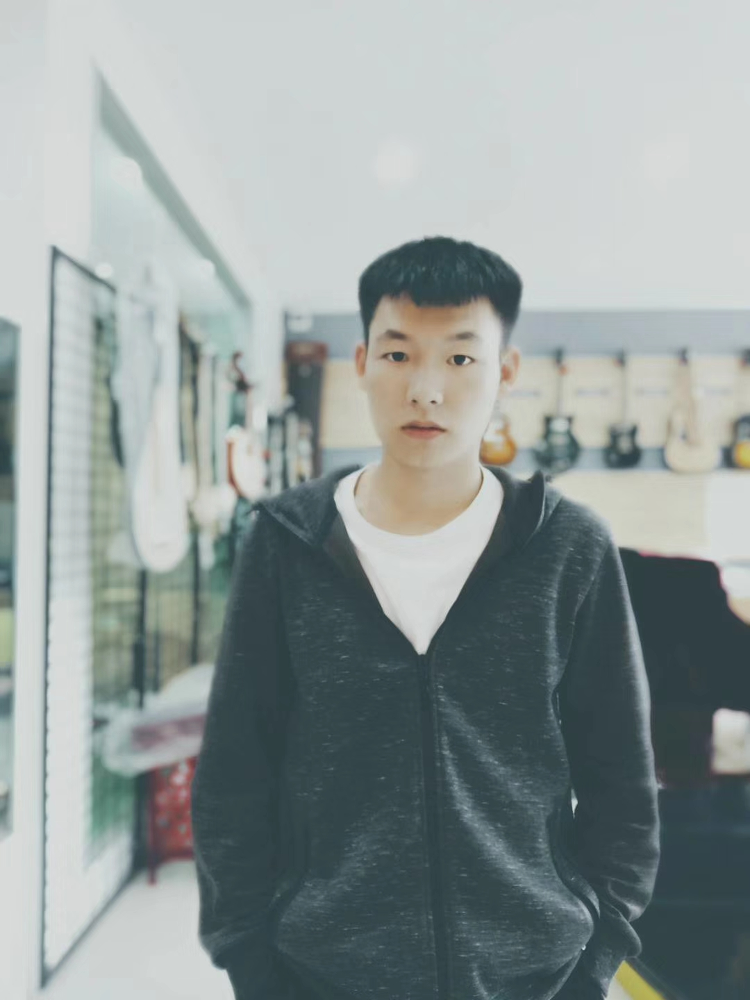

个人音乐作品集AN OPEN HORIZON
以声音，拥抱辽阔。
LUO TING
COMPOSITION & SOUND向下，听见更多 ↓
COMPOSITION & SOUND向下，听见更多 ↓
01 / SELECTED WORKS精选作品
作品，
各有天地。
从一部作品出发，
听见更辽阔的世界。
02 / ABOUT关于创作者

COMPOSER / MUSIC
罗挺LUO TING
毕业于西安音乐学院，作曲专业硕士。
这里是我的个人音乐空间，
用于发布作品，记录创作。
网站主题 / 旷境
以山海的辽阔，
容纳不同的声音与可能。
更多个人经历与创作介绍，后续补充。
03 / CONTACT与更多可能相遇